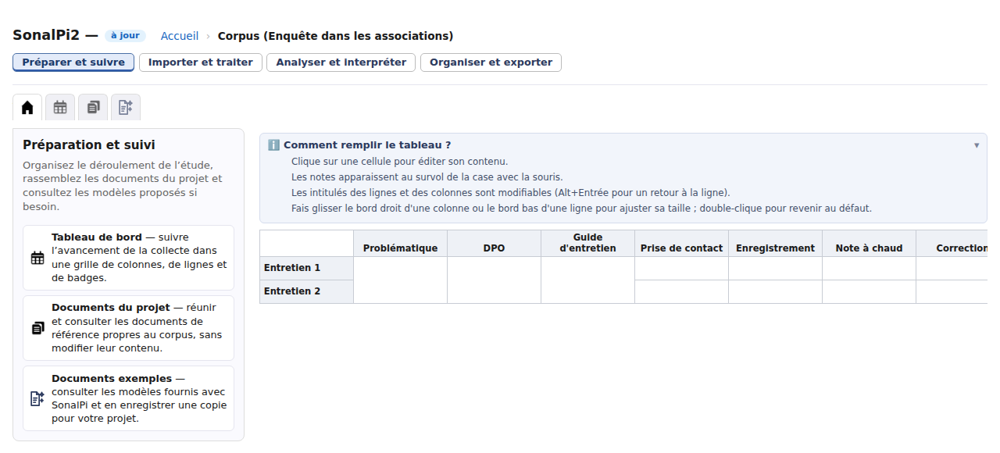

Découvrir et démarrer
Comprendre les notions et se repérer
SonalPi permet de rassembler des entretiens, de relire leurs transcriptions, de les corriger, de repérer les passages qui vous intéressent et de les analyser. Vous travaillez dans un corpus : c’est le cadre commun de votre étude.
Les mots utiles pour commencer
| Notion | À quoi sert-elle ? | Exemple |
|---|---|---|
| Corpus | Réunir les matériaux et les outils d’une même étude. | Une enquête sur le bénévolat dans des associations. |
| Entretien | Travailler sur un document du corpus, avec sa transcription et, s’il est associé, son enregistrement. | L’entretien avec une bénévole. |
| Locuteur | Indiquer qui parle dans un entretien. | La bénévole et la personne qui l’interroge. |
| Personne | Relier une même personne entre plusieurs entretiens. | Une bénévole rencontrée une première fois seule, puis en groupe. |
| Thème | Repérer des passages qui se rapportent à un sujet ou à une idée. | « Engagement bénévole ». |
| Variable | Décrire un entretien ou un locuteur avec des valeurs comparables. | « Ancienneté dans l’association » ; sa valeur peut être « Plus de cinq ans ». |
| Cas | Rassembler les matériaux d’une unité que vous étudiez. | Les passages concernant une association, même s’ils proviennent de plusieurs entretiens. |
| Recueil | Composer un document avec des citations et des textes de liaison. | Une synthèse sur les raisons de devenir bénévole. |
Vous n’avez pas besoin de tout utiliser dès le début. Un corpus, un entretien et quelques thèmes suffisent pour commencer à coder votre premier document.
L’accueil : choisir comment commencer
Au lancement, l’accueil permet de créer ou d’ouvrir un corpus et de retrouver les corpus récents.
Pour découvrir les outils sans utiliser vos propres données, deux entrées complémentaires sont disponibles dans Découvrir SonalPi :
- Parcours pas à pas : choisissez ce que vous voulez apprendre, puis suivez les étapes proposées sur un corpus d’exercice.
- Explorer les corpus exemples : ouvrez votre copie modifiable d’un exemple et essayez librement les outils, sans guide.
Les exemples portent sur un terrain fictif d’aide aux devoirs dans les associations. Votre copie d’exploration et les exercices des parcours sont des travaux distincts.
Les quatre espaces de travail
Après l’ouverture d’un corpus, quatre boutons restent disponibles en haut de la fenêtre. Ils permettent de travailler sur le même corpus de façons différentes.

| Espace | Vous y allez pour… |
|---|---|
| Préparer et suivre | Organiser le déroulement de l’étude avec le tableau de bord, réunir les documents du projet et consulter les modèles fournis. |
| Importer et traiter | Ajouter et gérer les entretiens, corriger le texte, identifier les locuteurs, coder, renseigner les données et pseudonymiser. |
| Analyser et interpréter | Réunir des passages avec Tri et synthèse, explorer le vocabulaire avec Lexico et comparer avec les analyses croisées. |
| Organiser et exporter | Rassembler les matériaux dans des cas, composer des recueils et exporter le corpus. |
Dans chaque espace, les onglets à icônes donnent accès aux différents outils. Survolez une icône pour lire son nom. L’onglet Accueil, représenté par une maison, présente les outils de l’espace ou de l’entretien.
Les menus de l’application
La barre de menus garde le même ordre : Corpus, Entretiens, Édition, Aide. Les commandes qui ne s’appliquent pas à votre situation sont grisées, mais restent à leur place.
Sur l’accueil général, Corpus permet de créer ou d’ouvrir un corpus ; Entretiens est grisé. Dans les espaces de travail, ce menu permet d’ajouter et de trier les entretiens du corpus courant. Le tri devient disponible à partir de deux entretiens.
Enregistrer concerne un entretien ouvert et modifiable, même si vous consultez temporairement un autre espace. La copie de sauvegarde ZIP est réservée aux corpus locaux. L’export du corpus devient disponible lorsqu’il contient des entretiens. Le menu Aide reste accessible pour consulter le guide et la FAQ.
Passer d’un outil à l’autre sans perdre le fil
Si vous quittez Importer et traiter pour consulter un autre espace, l’entretien ouvert reste disponible. Cliquez sur Importer et traiter pour le retrouver ; l’enregistrement ne reprend pas sa lecture automatiquement.
En revanche, Corpus dans le fil de navigation du haut ferme l’entretien et revient à la vue des entretiens. Accueil, dans ce même fil, ferme l’entretien et revient à l’accueil général de SonalPi. Dans un corpus distant, une fermeture qui ne peut pas aboutir est signalée : l’application vous laisse dans l’entretien.
À retenir : changer d’espace n’est pas la même chose que fermer un entretien.
Une question ? Consultez la FAQ des premiers pas.